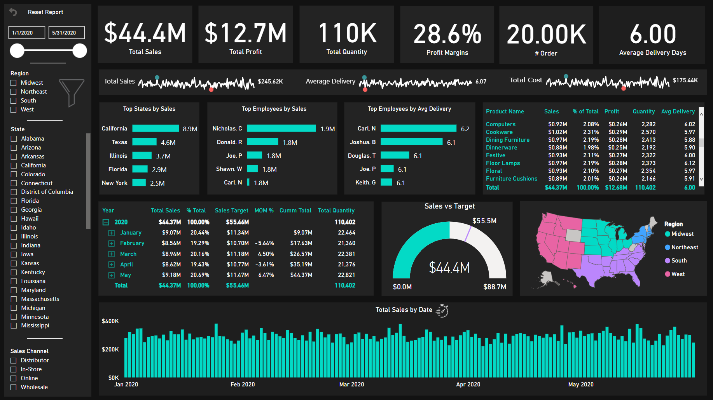

Featured Article and Updates

How to Build Beautiful Dashboards
PowerBI makes it easy to create dashboards quickly and easily, but sometimes it can be tricky to make your dashboards beautiful. There are some tips on...